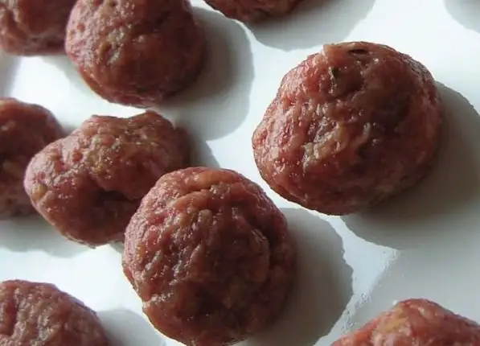

Isicia omentata (Hamburgers), image taken from here.
Description
Ancient Roman hamburgers, need I say more????
Ingredients
- 500 grams minced meat
- 1 French roll, soaked in white wine
- 1/2 teaspoon freshly ground pepper
- 50 millilitres liquamen (can use a little white wine with a pinch of salt or orange juice for kids)
- Some pine nuts and green peppercorns (go easy if serving to kids)
- A little caroenum (optional)
Steps
- Mix minced meat with the soaked French roll. Grind up the pine nuts and peppercorns and mix them into the meat.
- Form small balls with your hands. Put them in a little packet of foil and add a splash of Caroenum. Close the packet.
- Bake for 10 to 15 minutes.